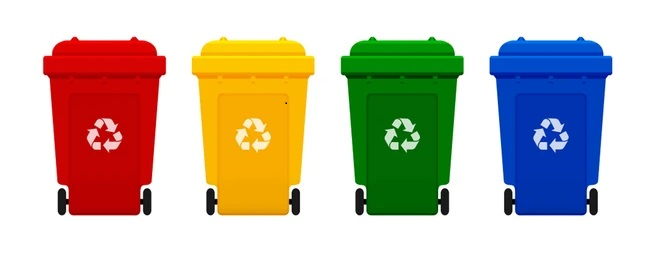
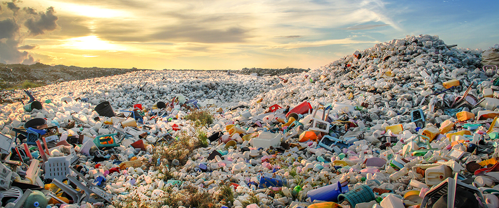
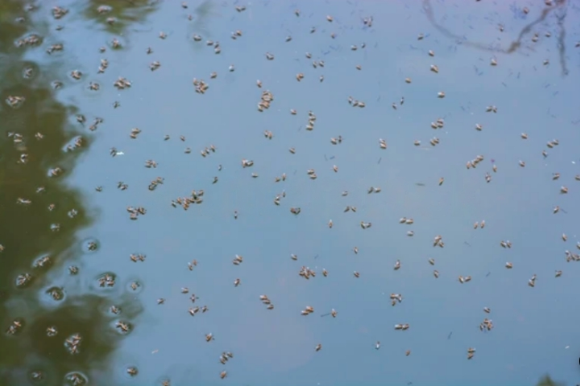
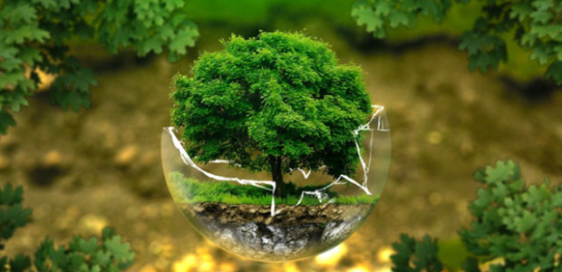
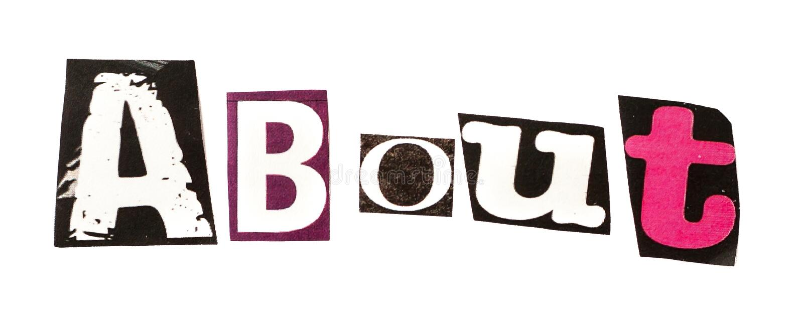

Clean Habits,
Healthy Surroundings
A Community Service Project on Health & Sanitation Awareness
Digital Initiative
A web platform developed as part of our CSP project to raise awareness about health, hygiene, and cleanliness in rural and semi-urban areas.
Community Focus
Designed to educate users, collect their responses, and share solutions for daily sanitation and personal hygiene challenges.
Wider Reach
The app serves as a digital alternative to physical surveys, helping us reach wider audiences across communities.
Clean Surroundings Tips
Learn & Act

Garbage Segregation
Separate waste at home into dry (plastic, paper) and wet (food, organic) to help proper disposal and recycling.

Avoid Open Dumping
Use covered bins and avoid throwing garbage in streets or drains. Open dumping spreads diseases and attracts pests.

Control Stagnant Water
Water collected in pots, tires, or trash becomes a breeding ground for mosquitoes. Empty it every 2–3 days.
Process to Keep
Surroundings Clean
Common Issues &
Practical Solutions

Clean Surroundings
Awareness Quiz
7 questions · Answers checked instantly
What should you do with kitchen waste?
What color bin is used for dry waste?
What is the effect of stagnant water?
What's the best way to dispose of plastic?
Which of these helps keep your area clean?
What should you do before the rainy season?
Where should e-waste (old batteries) be disposed?
Waste Management
Awareness
Say No to Plastic
Use These Alternatives
Water Conservation
for a Clean Environment
Surrounding
Health Tips
Based on current weather in your area
About This
Project

"Clean Habits, Healthy Surroundings" is a Community Service Project undertaken by students to promote health awareness through digital means. The project covers topics like personal hygiene, water safety, sanitation, and surroundings cleanliness. We aim to motivate people to adopt small changes that result in a big impact on health.